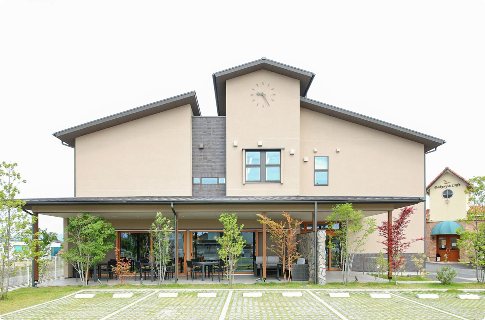

About us
Plusらぼについて
Plusらぼの始まり
「Plusらぼ」という名前には、人と社会にプラスを生み出す場所という意味が込められています。
困っている誰もが、ベクトルを活用した支援ができるように、本人の知識（プラス）に繋がる場を提供する「ヤカラトリー」（採択所）という想いが込められています。
IT × 福祉の可能性を研究し、
日常に新しい価値をプラスする。
PCを用いたリモート業務やWebサービスの活用といった、従来の概念には出ない新しいアプローチを「プラス」してくことで、支援の在り方をアップデートし続けるという意志を込めています。
Plusらぼの特徴
-
自宅から参加できるトレーニング
Plusらぼは、PCを使って自宅からトレーニングに参加することができます。外出に不安がある方や、生活リズムを整えながら就業を始めたい方でも取り組みやすい環境です。
-
IT・Webのスキルを学べる
IT、Web、デザインなどの分野のトレーニングを行っています。パソコンの基本操作から、実践的なスキルまで段階的に学ぶことができます。
-
チャットやオンラインで相談できる
スタッフはチャットやオンライン面談で定期的に回答することができます。困ったことはすぐに相談できる環境を大切にしています。
Access
運営法人


- 法人名
- 社会福祉法人若竹会
- 所在地
- 〒525-0022 滋賀県草津市川原町298-1 2F
- 設立
- 1989年9月
- 代表者
- 梅田 五雄
- 事業内容
-
第二種社会福祉事業
障がい福祉サービス事業の経営
移動支援事業の経営
特定相談支援事業の経営